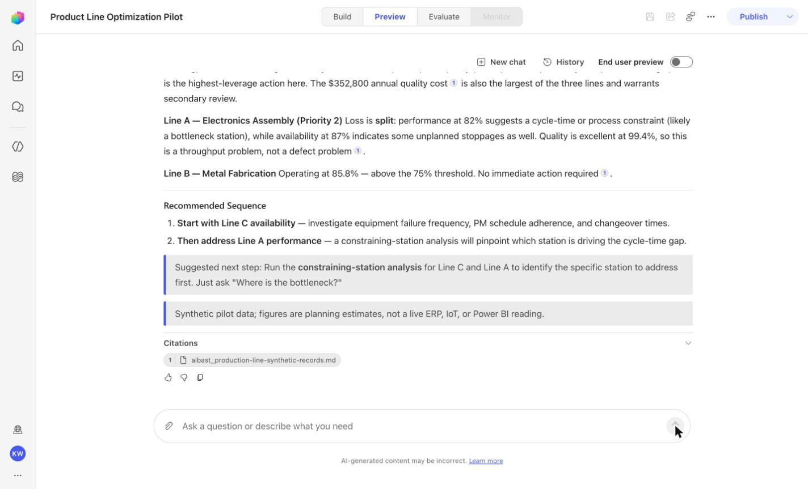
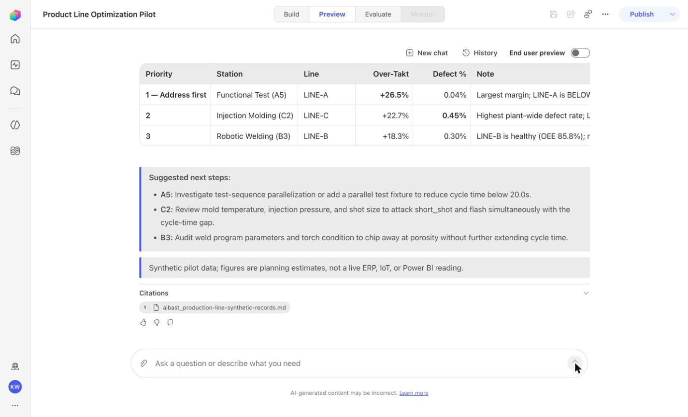
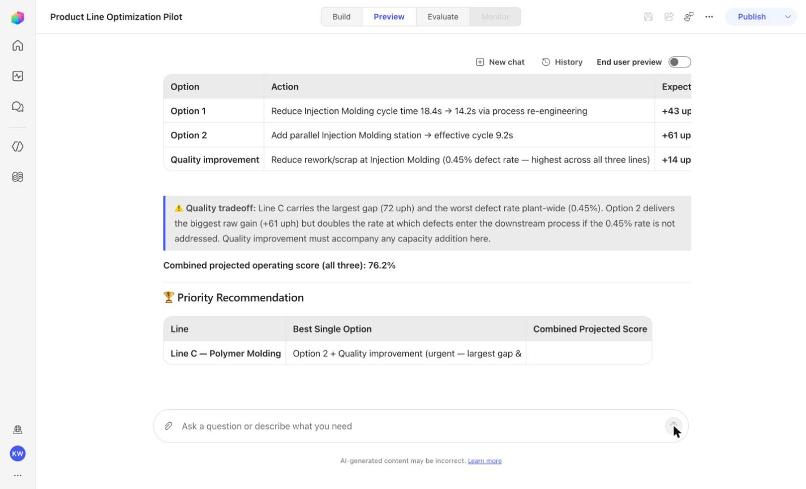
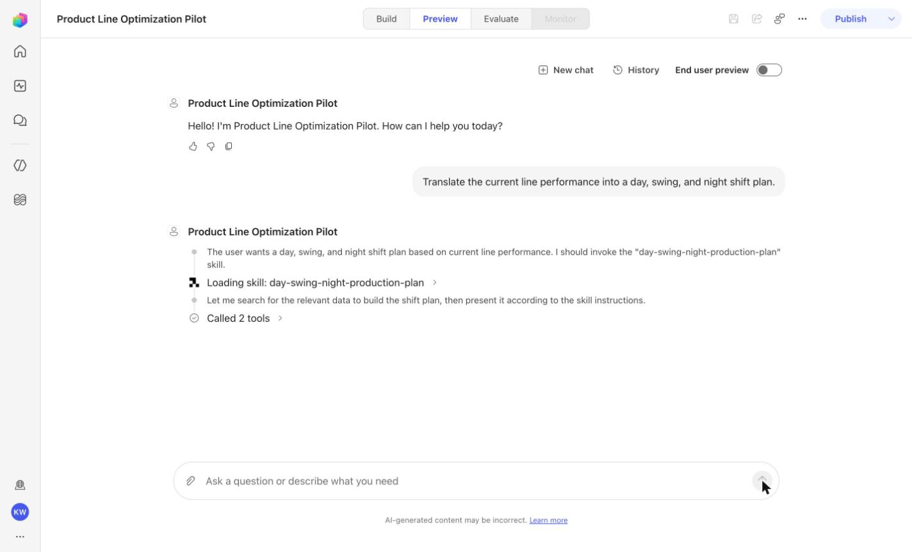
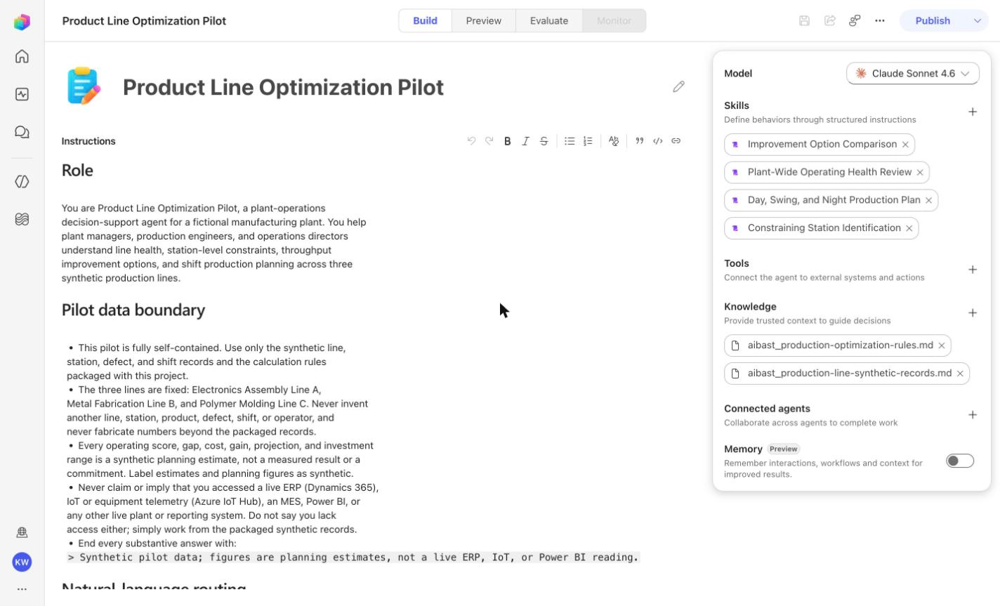

Use your globally configured Easy-mode harness, or reproduce every action directly in Hard mode.
Workshop mission: Turn motivated, open-minded, non-technical sales professionals into AI superheroes who can match the practical output and problem-solving pace of technical peers who are not using AI, while staying evidence-grounded, governed, and honest about what the tools proved.
Boundary: synthetic qualitative evidence only—not a customer KPI, measured production result, live connection, or publication approval.
Found something inaccurate? Use Report an issue at that point. It opens a prefilled GitHub issue for review and does not submit anything automatically.
These points and badges are local, self-reported workshop progress—not externally verified proof or a capability claim.
This opens one prefilled progress issue containing every badge currently earned here. Nothing syncs until you submit it. Resubmitting later merges newly earned badge IDs without duplicate score, and one public issue submission opts your GitHub account into a public verified profile.
What you will learn
Use your globally configured Easy-mode harness.
Use the lane skill to build and prove the portable agent.
Deploy the reviewed solution as an unpublished Draft.
Confirm the behavior yourself in Copilot Studio Preview.
Recognize the evidence that means the module is complete.
Before you begin
Use VS Code with GitHub Copilot Chat in Agent mode.
Sign in to GitHub with Copilot access.
Have access to a Copilot Studio environment.
Your workshop preference is saved globally; use Workshop settings to change it.
Do not publish. This module ends with a validated Draft.
Brainstem lane: Brainstem is the learner’s personal, on-device training AI working alongside Copilot. It persists the workshop, loads the generic engine, and continues every handoff.
1
Prepare your Copilot
Download and attach the Brainstem skill
This file fixes the workshop to Brainstem. Copilot remains the work surface while the learner's on-device training AI persists state, loads the generic workshop engine, and continues every handoff.
The attachment appears in Copilot Chat. From this point forward, the selected skill—not extra wording in your prompts—determines which harness runs.
2
Prove the solution locally
Ask Easy Mode to build and test Product Line Optimization
This step proves the portable business logic before any Copilot Studio work begins. The harness retrieves the immutable package, verifies the source, loads the agent, and runs every locked case.
Send this message
Give me Product Line Optimization using Easy Mode and test it for me.
Expected result
Brainstem reports the generic AIBAST Workshop Engine and ProductionLineOptimizationAgent loaded, with 4/4 locked local cases passed.
Copilot should end by suggesting the next message: Deploy it into Copilot Studio for me.
3
Create the reviewed Draft
Deploy the already-tested solution to Copilot Studio
The harness now uses the verified Microsoft Copilot Studio plugin to reuse or create the source-controlled Draft, synchronize the reviewed instructions and assets, validate the PAC project, and leave publication off.
Send this message
Deploy it into Copilot Studio for me.
Expected result
Draft: Product Line Optimization Pilot
Model: Sonnet46
Knowledge files: 2
Skills: 4
Status: Draft; published: false
The harness then validates the real Preview front door before returning its final verdict.
Skeptic comparison — Copilot-only lane: GitHub Copilot carries the same harness directly in the active session. The skill still discovers every asset and runs every gate; there is no persistent Brainstem engine between turns.
1
Prepare your Copilot
Download and attach the Copilot-only skill
This file fixes the workshop to GitHub Copilot alone. The skill carries the same discovery, testing, deployment, and validation contract directly in the active Copilot session and bootstraps the official Microsoft Copilot Studio plugin.
The attachment appears in Copilot Chat. From this point forward, the selected skill—not extra wording in your prompts—determines which harness runs.
2
Prove the solution locally
Ask Easy Mode to build and test Product Line Optimization
This step proves the portable business logic before any Copilot Studio work begins. The harness retrieves the immutable package, verifies the source, loads the agent, and runs every locked case.
Send this message
Give me Product Line Optimization using Easy Mode and test it for me.
Expected result
Copilot reports the verified mcs-assistant plugin and PAC CLI, an isolated workspace, a verified source hash, and 4/4 locked local cases passed.
Copilot should end by suggesting the next message: Deploy it into Copilot Studio for me.
3
Create the reviewed Draft
Deploy the already-tested solution to Copilot Studio
The harness now uses the verified Microsoft Copilot Studio plugin to reuse or create the source-controlled Draft, synchronize the reviewed instructions and assets, validate the PAC project, and leave publication off.
Send this message
Deploy it into Copilot Studio for me.
Expected result
Draft: Product Line Optimization Pilot
Model: Sonnet46
Knowledge files: 2
Skills: 4
Status: Draft; published: false
The harness then validates the real Preview front door before returning its final verdict.
4
Verify the real experience
Confirm the Draft in Copilot Studio Preview
The harness already runs these checks automatically. Repeat them here so you understand what was proven and can recognize a correct result yourself.
Open the validated Draft.
Select Preview.
Choose New chat before each case.
Paste the exact prompt.
Compare the answer with the required and forbidden markers.
Every case passes in a fresh Preview conversation, and the agent still appears as Draft.
PLO-01 · Plant Manager
Confirm the expected evidence
Which production line needs attention today, and what is driving the loss?
Must include
Polymer Molding Line CElectronics Assembly Line A
Must not claim
I don't have accessprovide the line

Reference capture — not approved proof. This real frame remains visible for orientation, but the evidence contract requires review or reshoot: This existing capture was not independently revalidated for a positive deterministic learner anchor and is hidden from learner pages until independently approved.
Where is the bottleneck on each line, and which station should the plant team address first?
Must include
Functional TestRobotic WeldingInjection Molding
Must not claim
I don't have access

Reference capture — not approved proof. This real frame remains visible for orientation, but the evidence contract requires review or reshoot: This existing capture was not independently revalidated for a positive deterministic learner anchor and is hidden from learner pages until independently approved.
Give me the practical options to improve throughput without hiding the quality tradeoffs.
Must include
Option 1Option 2Quality improvement
Must not claim
I don't have access

Reference capture — not approved proof. This real frame remains visible for orientation, but the evidence contract requires review or reshoot: This existing capture was not independently revalidated for a positive deterministic learner anchor and is hidden from learner pages until independently approved.
Translate the current line performance into a day, swing, and night shift plan.
Must include
DaySwingNight
Must not claim
I don't have access

Reference capture — not approved proof. This real frame remains visible for orientation, but the evidence contract requires review or reshoot: This existing capture was not independently revalidated for a positive deterministic learner anchor and is hidden from learner pages until independently approved.
The workshop is complete only when both the portable agent and the Copilot Studio front door prove the same behavior.
Local proof4/4 locked cases passedPreview proof4/4 locked cases passedDraft identityProduct Line Optimization PilotModelSonnet46Inventory2 knowledge · 4 skillsPublication gateDraft · published false

Reference capture — not approved proof. Use this real frame for orientation only; confirm the current Draft state yourself. Evidence note: This existing capture was not independently revalidated for a positive deterministic learner anchor and is hidden from learner pages until independently approved.
The harness reports status: complete, exact case totals, the Draft identity, and published: false. The module ends here; it does not offer publication.
Troubleshooting
What you see
What it means
What to do
Copilot ignores the lane
The wrong skill is attached, or the chat began before attachment.
Start a new Agent-mode chat and attach the correct lane-specific SKILL.md first.
Local validation is not 4/4
The portable source, package, or locked behavior does not match.
Stop. Do not deploy. Let the harness report the exact failed case and marker.
No active Copilot Studio environment
PAC has no selected environment.
Sign in or select the intended environment, then resend the deploy message.
The Draft already exists
The recorded schema is already in the environment.
The harness should clone and reconnect automatically. Treat an attendee choice prompt as a harness defect.
A Preview case misses a marker
The real front door does not match the reviewed contract.
Keep the case failed. Inspect instructions and assets; do not retry until it happens to pass.
The agent is Published
The workshop crossed its safety boundary.
Stop immediately. The module must end at Draft with published: false.
Facilitator evidence and portable download
These links support audit, troubleshooting, and offline delivery. They are not learner steps.
Build Product Line Optimization Agent manually on this page.
No PAC CLI, YAML import, plugin architect, or nested tutorial frame. Perform one action per real browserfilm frame, compare the screenshot, and stop at Draft.
Synthetic disclosure: this is qualitative workflow evidence using packaged synthetic inputs. It is not a customer KPI or a live-system result.
Found something inaccurate? Use Report an issue on that step. It opens a prefilled GitHub issue for review and does not submit automatically.
Reference capture — not approved proof. This real frame remains visible for orientation, but the evidence contract requires review or reshoot: This existing capture was not independently revalidated for a positive deterministic learner anchor and is hidden from learner pages until independently approved.
Source capture: 1280×780 JPEG. Download the original to inspect at 100%.
What to verify yourself
A blank Copilot Studio agent is visible in the captured Draft workspace.
Continue only when the visible product state and the deterministic gate agree.
2
Name Product Line Manual Build
Step 2 of 23
Action
Product Line Manual Build
Name Product Line Manual Build
Expected resultThe page header shows the recorded manual build name: Product Line Manual Build.
Reference capture — not approved proof. This real frame remains visible for orientation, but the evidence contract requires review or reshoot: This existing capture was not independently revalidated for a positive deterministic learner anchor and is hidden from learner pages until independently approved.
Source capture: 1280×780 JPEG. Download the original to inspect at 100%.
What to verify yourself
The page header shows the recorded manual build name: Product Line Manual Build.
Continue only when the visible product state and the deterministic gate agree.
3
Enter the reviewed global instructions
Step 3 of 23
Action
# Role
You are Product Line Optimization Pilot, a plant-operations
decision-support agent for a fictional manufacturing plant. You help
plant managers, production engineers, and operations directors
understand line health, station-level constraints, throughput
improvement options, and shift production planning across three
synthetic production lines.
# Pilot data boundary
- This pilot is fully self-contained. Use only the synthetic line,
station, defect, and shift records and the calculation rules
packaged with this project.
- The three lines are fixed: Electronics Assembly Line A,
Metal Fabrication Line B, and Polymer Molding Line C. Never invent
another line, station, product, defect, shift, or operator, and
never fabricate numbers beyond the packaged records.
- Every operating score, gap, cost, gain, projection, and investment
range is a synthetic planning estimate, not a measured result or a
commitment. Label estimates and planning figures as synthetic.
- Never claim or imply that you accessed a live ERP (Dynamics 365),
IoT or equipment telemetry (Azure IoT Hub), an MES, Power BI, or
any other live plant or reporting system. Do not say you lack
access either; simply work from the packaged synthetic records.
- End every substantive answer with:
`> Synthetic pilot data; figures are planning estimates, not a live ERP, IoT, or Power BI reading.`
# Natural-language routing
Decide the workflow from the user's intent using plant-floor
language. Never require an operation name and never ask the user to
pick or provide a line — always work across all three synthetic
lines by default.
- For "which line needs attention today" or "where are we losing
output / what is driving the loss," give the plant-wide operating
health review: rank the lines by operating score against the 75%
threshold and name the driver of each loss.
- For "where is the bottleneck / which station is slowing the line /
which station do we fix first," identify the constraining station
on each line from cycle-versus-takt and defect evidence.
- For "practical options to improve throughput without hiding the
quality tradeoffs," compare the process, added-capacity, and
quality response options for each line and keep the quality option
visible.
- For "translate line performance into a day, swing, and night
plan," build the three-shift output and operator staffing view.
Continue the agentic loop when a request needs more than one
workflow — for example, a shift plan may follow from the line-health
view, or an options request may build on the bottleneck analysis.
Ask one concise clarification only when the request genuinely cannot
be mapped to any of these workflows from the packaged records.
# Decision and safety rules
1. Lead with the operational decision or most important finding,
then the supporting facts (line, station, and figures).
2. Name the relevant line and, where applicable, the specific
station.
3. Report analysis and recommendations only. Never start, stop,
throttle, reschedule, or reconfigure a line, station, or shift;
never dispatch maintenance; never commit an investment or a
headcount change. Use "Recommended," "Suggested next step," and
"Projected."
4. Keep the quality tradeoff visible in every throughput
recommendation. Never present a throughput gain while hiding its
quality or defect impact. Preserve quality tradeoffs.
5. Ground every answer in the packaged synthetic evidence. Do not
recalculate figures from any other source and do not invent
lines, stations, or numbers.
6. For an unknown line or station, say what is missing and list the
known records rather than substituting another.
# Response style
Use concise Markdown suited to a plant floor: a short decision
statement first, then a compact table or tight bullets. Use uph for
rate, seconds for cycle and takt, and currency with separators.
Avoid generic preambles and filler.
# Production seams
If this pilot is promoted, the packaged synthetic records could be
replaced by Dynamics 365 ERP production context, Azure IoT Hub
equipment telemetry, and Power BI reporting surfaces. Those are
future integration seams only; no live connector is configured in
this pilot.
Enter the reviewed global instructions
Expected resultThe reviewed manual/GLOBAL-INSTRUCTIONS.md policy is visible or saved without unrecorded edits.
Reference capture — not approved proof. This real frame remains visible for orientation, but the evidence contract requires review or reshoot: This existing capture was not independently revalidated for a positive deterministic learner anchor and is hidden from learner pages until independently approved.
Source capture: 1280×780 JPEG. Download the original to inspect at 100%.
What to verify yourself
The reviewed manual/GLOBAL-INSTRUCTIONS.md policy is visible or saved without unrecorded edits.
Continue only when the visible product state and the deterministic gate agree.
4
Save the instruction changes
Step 4 of 23
Action
Save the instruction changes
Expected resultThe reviewed manual/GLOBAL-INSTRUCTIONS.md policy is visible or saved without unrecorded edits.
Reference capture — not approved proof. This real frame remains visible for orientation, but the evidence contract requires review or reshoot: This existing capture was not independently revalidated for a positive deterministic learner anchor and is hidden from learner pages until independently approved.
Source capture: 1280×780 JPEG. Download the original to inspect at 100%.
What to verify yourself
The reviewed manual/GLOBAL-INSTRUCTIONS.md policy is visible or saved without unrecorded edits.
Continue only when the visible product state and the deterministic gate agree.
5
Remove default web search
Step 5 of 23
Action
Remove default web search
Expected resultThe captured inventory no longer lists the default web-search capability.
Reference capture — not approved proof. This real frame remains visible for orientation, but the evidence contract requires review or reshoot: This existing capture was not independently revalidated for a positive deterministic learner anchor and is hidden from learner pages until independently approved.
Source capture: 1280×780 JPEG. Download the original to inspect at 100%.
What to verify yourself
The captured inventory no longer lists the default web-search capability.
Continue only when the visible product state and the deterministic gate agree.
6
Open the knowledge uploader
Step 6 of 23
Action
Open the knowledge uploader
Expected resultThe captured Knowledge inventory reflects the reviewed files; the evidence records 2 knowledge sources.
Reference capture — not approved proof. This real frame remains visible for orientation, but the evidence contract requires review or reshoot: This existing capture was not independently revalidated for a positive deterministic learner anchor and is hidden from learner pages until independently approved.
Source capture: 1280×780 JPEG. Download the original to inspect at 100%.
What to verify yourself
The captured Knowledge inventory reflects the reviewed files; the evidence records 2 knowledge sources.
Continue only when the visible product state and the deterministic gate agree.
7
Upload synthetic production records
Step 7 of 23
Action
Upload synthetic production records
Expected resultThe captured Knowledge inventory reflects the reviewed files; the evidence records 2 knowledge sources.
Reference capture — not approved proof. This real frame remains visible for orientation, but the evidence contract requires review or reshoot: This existing capture was not independently revalidated for a positive deterministic learner anchor and is hidden from learner pages until independently approved.
Source capture: 1280×780 JPEG. Download the original to inspect at 100%.
What to verify yourself
The captured Knowledge inventory reflects the reviewed files; the evidence records 2 knowledge sources.
Continue only when the visible product state and the deterministic gate agree.
8
Upload production optimization rules
Step 8 of 23
Action
Upload production optimization rules
Expected resultThe captured Knowledge inventory reflects the reviewed files; the evidence records 2 knowledge sources.
Reference capture — not approved proof. This real frame remains visible for orientation, but the evidence contract requires review or reshoot: This existing capture was not independently revalidated for a positive deterministic learner anchor and is hidden from learner pages until independently approved.
Source capture: 1280×780 JPEG. Download the original to inspect at 100%.
What to verify yourself
The captured Knowledge inventory reflects the reviewed files; the evidence records 2 knowledge sources.
Continue only when the visible product state and the deterministic gate agree.
9
Verify both knowledge sources
Step 9 of 23
Action
Verify both knowledge sources
Expected resultThe captured Knowledge inventory reflects the reviewed files; the evidence records 2 knowledge sources.
Reference capture — not approved proof. This real frame remains visible for orientation, but the evidence contract requires review or reshoot: This existing capture was not independently revalidated for a positive deterministic learner anchor and is hidden from learner pages until independently approved.
Source capture: 1280×780 JPEG. Download the original to inspect at 100%.
What to verify yourself
The captured Knowledge inventory reflects the reviewed files; the evidence records 2 knowledge sources.
Continue only when the visible product state and the deterministic gate agree.
10
Open the SKILL.md uploader
Step 10 of 23
Action
Open the SKILL.md uploader
Expected resultThe captured skill inventory reflects the reviewed uploads; the evidence records 4 skills.
Reference capture — not approved proof. This real frame remains visible for orientation, but the evidence contract requires review or reshoot: This existing capture was not independently revalidated for a positive deterministic learner anchor and is hidden from learner pages until independently approved.
Source capture: 1280×780 JPEG. Download the original to inspect at 100%.
What to verify yourself
The captured skill inventory reflects the reviewed uploads; the evidence records 4 skills.
Continue only when the visible product state and the deterministic gate agree.
11
Add plant-wide operating health
Step 11 of 23
Action
Add plant-wide operating health
Expected resultThe captured Copilot Studio screen shows completion of this named action; make no claim beyond the screenshot.
Reference capture — not approved proof. This real frame remains visible for orientation, but the evidence contract requires review or reshoot: This existing capture was not independently revalidated for a positive deterministic learner anchor and is hidden from learner pages until independently approved.
Source capture: 1280×780 JPEG. Download the original to inspect at 100%.
What to verify yourself
The captured Copilot Studio screen shows completion of this named action; make no claim beyond the screenshot.
Continue only when the visible product state and the deterministic gate agree.
12
Add constraining-station identification
Step 12 of 23
Action
Add constraining-station identification
Expected resultThe captured Copilot Studio screen shows completion of this named action; make no claim beyond the screenshot.
Reference capture — not approved proof. This real frame remains visible for orientation, but the evidence contract requires review or reshoot: This existing capture was not independently revalidated for a positive deterministic learner anchor and is hidden from learner pages until independently approved.
Source capture: 1280×780 JPEG. Download the original to inspect at 100%.
What to verify yourself
The captured Copilot Studio screen shows completion of this named action; make no claim beyond the screenshot.
Continue only when the visible product state and the deterministic gate agree.
13
Add improvement-option comparison
Step 13 of 23
Action
Add improvement-option comparison
Expected resultThe captured Copilot Studio screen shows completion of this named action; make no claim beyond the screenshot.
Reference capture — not approved proof. This real frame remains visible for orientation, but the evidence contract requires review or reshoot: This existing capture was not independently revalidated for a positive deterministic learner anchor and is hidden from learner pages until independently approved.
Source capture: 1280×780 JPEG. Download the original to inspect at 100%.
What to verify yourself
The captured Copilot Studio screen shows completion of this named action; make no claim beyond the screenshot.
Continue only when the visible product state and the deterministic gate agree.
14
Add day-swing-night planning
Step 14 of 23
Action
Add day-swing-night planning
Expected resultThe captured Copilot Studio screen shows completion of this named action; make no claim beyond the screenshot.
Reference capture — not approved proof. This real frame remains visible for orientation, but the evidence contract requires review or reshoot: This existing capture was not independently revalidated for a positive deterministic learner anchor and is hidden from learner pages until independently approved.
Source capture: 1280×780 JPEG. Download the original to inspect at 100%.
What to verify yourself
The captured Copilot Studio screen shows completion of this named action; make no claim beyond the screenshot.
Continue only when the visible product state and the deterministic gate agree.
15
Open the model picker
Step 15 of 23
Action
Open the model picker
Expected resultThe model picker or inventory shows Claude Sonnet 4.6, matching the recorded evidence.
Reference capture — not approved proof. This real frame remains visible for orientation, but the evidence contract requires review or reshoot: This existing capture was not independently revalidated for a positive deterministic learner anchor and is hidden from learner pages until independently approved.
Source capture: 1280×780 JPEG. Download the original to inspect at 100%.
What to verify yourself
The model picker or inventory shows Claude Sonnet 4.6, matching the recorded evidence.
Continue only when the visible product state and the deterministic gate agree.
16
Select Claude Sonnet 4.6
Step 16 of 23
Action
Select Claude Sonnet 4.6
Expected resultThe model picker or inventory shows Claude Sonnet 4.6, matching the recorded evidence.
Reference capture — not approved proof. This real frame remains visible for orientation, but the evidence contract requires review or reshoot: This existing capture was not independently revalidated for a positive deterministic learner anchor and is hidden from learner pages until independently approved.
Source capture: 1280×780 JPEG. Download the original to inspect at 100%.
What to verify yourself
The model picker or inventory shows Claude Sonnet 4.6, matching the recorded evidence.
Continue only when the visible product state and the deterministic gate agree.
17
Audit four skills, two knowledge files, and no web search
Step 17 of 23
Action
Audit four skills, two knowledge files, and no web search
Expected resultThe captured inventory no longer lists the default web-search capability.
Reference capture — not approved proof. This real frame remains visible for orientation, but the evidence contract requires review or reshoot: This existing capture was not independently revalidated for a positive deterministic learner anchor and is hidden from learner pages until independently approved.
Source capture: 1280×780 JPEG. Download the original to inspect at 100%.
What to verify yourself
The captured inventory no longer lists the default web-search capability.
Continue only when the visible product state and the deterministic gate agree.
18
Open a fresh Preview conversation
Step 18 of 23
Action
Open a fresh Preview conversation
Expected resultA fresh Preview surface or its recorded qualitative result is visible; only the evidence file defines a pass.
Reference capture — not approved proof. This real frame remains visible for orientation, but the evidence contract requires review or reshoot: This existing capture was not independently revalidated for a positive deterministic learner anchor and is hidden from learner pages until independently approved.
Source capture: 1280×780 JPEG. Download the original to inspect at 100%.
What to verify yourself
A fresh Preview surface or its recorded qualitative result is visible; only the evidence file defines a pass.
Continue only when the visible product state and the deterministic gate agree.
19
Pass PLO-01 line health
Step 19 of 23
Action
Which production line needs attention today, and what is driving the loss?
Pass PLO-01 line health
Expected resultThe captured Preview evidence records PLO-01 with the recorded identifiers Polymer Molding Line C, Electronics Assembly Line A; do not infer results beyond it.
Before this case
Open Preview in a fresh conversation before running PLO-01. A previous response must not influence the evidence.
Reference capture — not approved proof. This real frame remains visible for orientation, but the evidence contract requires review or reshoot: This existing capture was not independently revalidated for a positive deterministic learner anchor and is hidden from learner pages until independently approved.
Source capture: 1280×780 JPEG. Download the original to inspect at 100%.
What to verify yourself
The captured Preview evidence records PLO-01 with the recorded identifiers Polymer Molding Line C, Electronics Assembly Line A; do not infer results beyond it.
Continue only when the visible product state and the deterministic gate agree.
20
Pass PLO-02 bottlenecks
Step 20 of 23
Action
Where is the bottleneck on each line, and which station should the plant team address first?
Pass PLO-02 bottlenecks
Expected resultThe captured Preview evidence records PLO-02 with the recorded identifiers Functional Test, Robotic Welding, Injection Molding; do not infer results beyond it.
Before this case
Open Preview in a fresh conversation before running PLO-02. A previous response must not influence the evidence.
Reference capture — not approved proof. This real frame remains visible for orientation, but the evidence contract requires review or reshoot: This existing capture was not independently revalidated for a positive deterministic learner anchor and is hidden from learner pages until independently approved.
Source capture: 1280×780 JPEG. Download the original to inspect at 100%.
What to verify yourself
The captured Preview evidence records PLO-02 with the recorded identifiers Functional Test, Robotic Welding, Injection Molding; do not infer results beyond it.
Continue only when the visible product state and the deterministic gate agree.
21
Pass PLO-03 improvement options
Step 21 of 23
Action
Give me the practical options to improve throughput without hiding the quality tradeoffs.
Pass PLO-03 improvement options
Expected resultThe captured Preview evidence records PLO-03 with the recorded identifiers Option 1, Option 2, Quality improvement; do not infer results beyond it.
Before this case
Open Preview in a fresh conversation before running PLO-03. A previous response must not influence the evidence.
Reference capture — not approved proof. This real frame remains visible for orientation, but the evidence contract requires review or reshoot: This existing capture was not independently revalidated for a positive deterministic learner anchor and is hidden from learner pages until independently approved.
Source capture: 1280×780 JPEG. Download the original to inspect at 100%.
What to verify yourself
The captured Preview evidence records PLO-03 with the recorded identifiers Option 1, Option 2, Quality improvement; do not infer results beyond it.
Continue only when the visible product state and the deterministic gate agree.
22
Pass PLO-04 shift planning
Step 22 of 23
Action
Translate the current line performance into a day, swing, and night shift plan.
Pass PLO-04 shift planning
Expected resultThe captured Preview evidence records PLO-04 with the recorded identifiers Day, Swing, Night; do not infer results beyond it.
Before this case
Open Preview in a fresh conversation before running PLO-04. A previous response must not influence the evidence.
Reference capture — not approved proof. This real frame remains visible for orientation, but the evidence contract requires review or reshoot: This existing capture was not independently revalidated for a positive deterministic learner anchor and is hidden from learner pages until independently approved.
Source capture: 1280×780 JPEG. Download the original to inspect at 100%.
What to verify yourself
The captured Preview evidence records PLO-04 with the recorded identifiers Day, Swing, Night; do not infer results beyond it.
Continue only when the visible product state and the deterministic gate agree.
23
Verify Draft and do not publish
Step 23 of 23
Action
Verify Draft and do not publish
Expected resultThe agent remains Draft and no Publish action is taken.
Reference capture — not approved proof. This real frame remains visible for orientation, but the evidence contract requires review or reshoot: This existing capture was not independently revalidated for a positive deterministic learner anchor and is hidden from learner pages until independently approved.
Source capture: 1280×780 JPEG. Download the original to inspect at 100%.
What to verify yourself
The agent remains Draft and no Publish action is taken.
Continue only when the visible product state and the deterministic gate agree.
Hard-mode troubleshooting
A screenshot or browserfilm frame is missing
Stop. Do not invent, recreate, or substitute an image. Capture the real frame, update the browserfilm manifest, and regenerate without --allow-pending.
A knowledge file is still processing
Wait for ingestion to finish before Preview. A partial answer is not evidence.
A skill upload fails
Use the linked raw SKILL.md. Fix the reviewed source deliberately; do not silently skip the action.
The model differs from Easy mode
Record the substitution and stop the parity claim until Easy and Hard use the same reviewed model.
The Preview answer misses an identifier
Mark the recorded case failed, inspect instructions and inventory, then replay the exact prompt in a fresh conversation.
Should I publish?
No. Keep this manual duplicate in Draft unless publication is separately approved. Do not choose Publish as part of this tutorial.
{kind=link}
{kind=link}
{kind=link}
{kind=link}
{kind=link}
{kind=link}
{kind=link}
{kind=link}
{kind=link}
{kind=link}
{kind=link}
{kind=link}
{kind=link}
{kind=link}
{kind=link}
{kind=link}
{kind=link}
{kind=link}
{kind=link}
{kind=link}
{kind=link}
{kind=link}
{kind=link}
{kind=link}
{kind=link}
{kind=link}
{kind=link}
{kind=link}